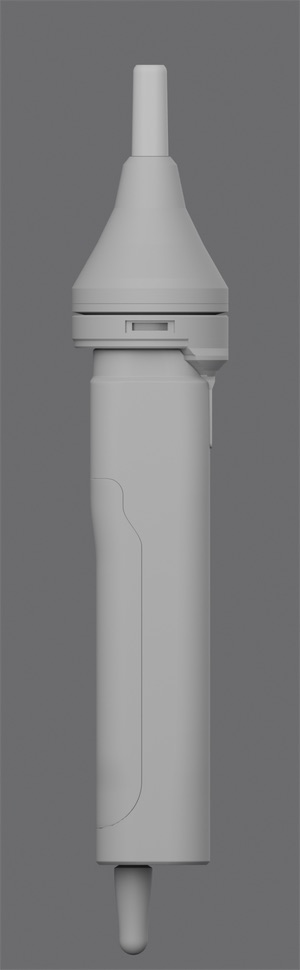
C1 short · 75.0 mm
34 mm transition compresses the three conical segments into one blunt dome
[ LAB · AS DESIGNED ][ INVESTIGATION · AS EVIDENCED ] [+]
01 · Specimen · sheet 03
A self-initiated concept for a compact hair-styling appliance, built as a parametric model in staged decisions — proportion, bridge, bayonet interface, concentrator, CMF — and locked to mineral orange, warm grey and satin aluminium. Concept only. No physical prototype exists; flow, temperature, power, noise, mass and safety are not established. What this sheet measures is the digital model — and only the digital model.

1Mineral orange #A6633B · attachment shell · CMF A2_REFINED, locked 21 Sep 2026Designed
23-lug bayonet at 120° · 30° lock · 0.50 mm draw-downSpecified intent · modelled, never built
3B2.2 fork · 8.4 mm legs · 0.70 mm shadow gapDesigned · owner-approved exterior
4Handle 40 × 36 × 155 mm · collar Ø47Designed · CAD dimension

1No physical prototype · flow, heat, power, noise, mass: unsetNot claimed
2Min shell-to-duct clearance +0.251 mm, analytic · geometric onlyDesigned
3Interface frozen 20 Sep 2026 after 3 iterations · never built or testedSpecified intent
40.0 mm vertex deviation across 21 parts vs the frozen branchDesigned · CAD self-check
Concept. No physical prototype. Flow, temperature, power, noise and safety are not established.
[ Keyboard · A2_REFINED ]
Locked 21 Sep 2026 · no pure black, no pure white
02 · Question
THERMA began as a proportion study: a 40 × 36 × 155 mm handle where every key dimension is a named variable and the corner radii are live bevel weights, not modelled geometry. v02 corrected the proportions. Five bridge variants explored a structural member emerging from under the collar, and the B2.2 fork was approved. A three-lug bayonet followed and was frozen after three iterations; then the 82 mm concentrator, its S2 shoulder, and a CMF study locked to A2_REFINED. Each stage re-verified the frozen body and changed nothing else.
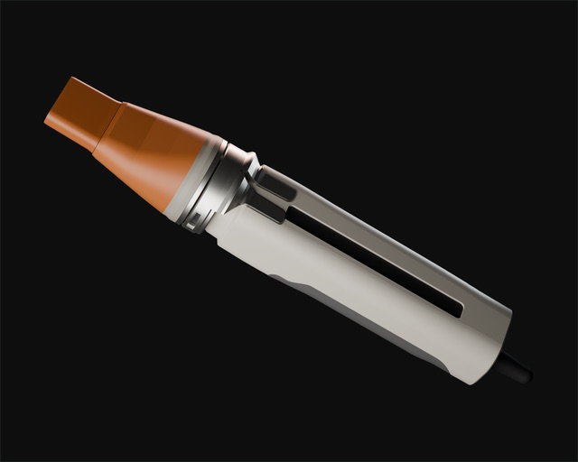
03 · Mechanism
VisibleHiddenDatumDimensionLock arc
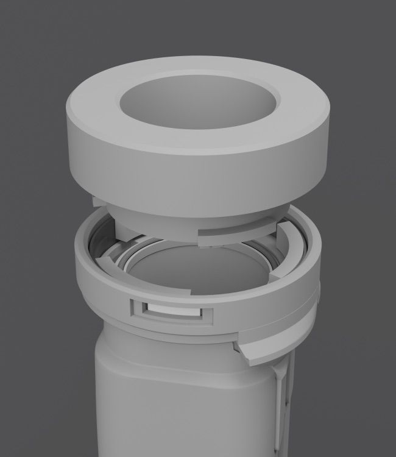
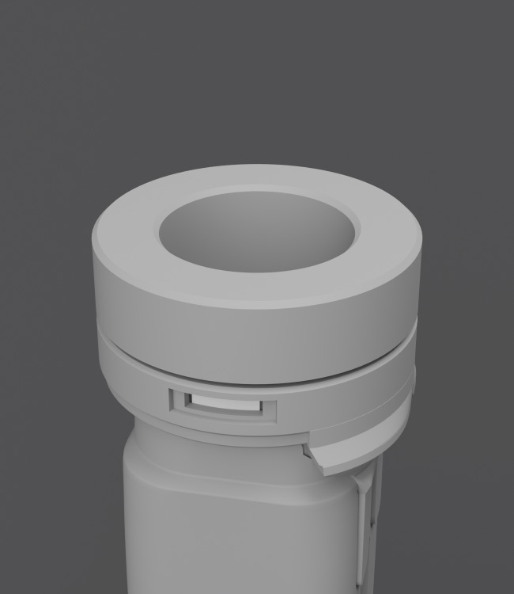
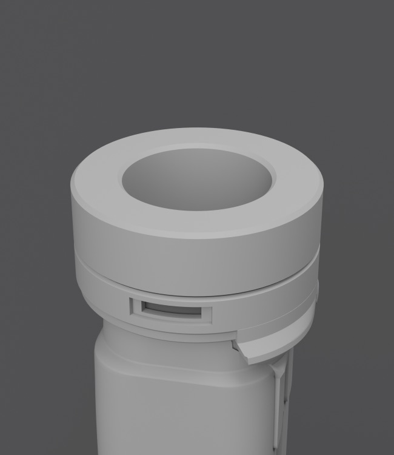
Side schematic · mm
Collar Ø47 × 10 · attachment envelope Ø47 × 12 · travel drawn 1:1 · seat detail drawn ×8 (0.4 mm → 3.2)
Plan · orbit protractor
3 lugs · 44° · at 120° · entry slots 52° · lock arc 0–30°, ticks every 5°
Seal Ø30.4 · section thickness
1.52 mm · free1.52 mm · free1.27 mm · 16 % squeeze
Free 1.52 mm (dashed) · locked 1.27 mm · seal scaled 0.836 in Z about its own seat
Bayonet track, unwrapped · angle to scale, depth schematic
STATE A · OPEN · +15.0 MM · 0° · SEAL 1.52 MM FREE
| State | Offset | Rot. | Seal | Window |
|---|---|---|---|---|
| A · Open | +15.0 mm | 0° | 1.52 free | Amber arc |
| B · Inserted | 0.0 mm | 0° | 1.52 | Amber arc |
| C · Locked | −0.4 mm | +30° | 1.27 (Z × 0.836) | Arc clear |
Transforms of the frozen CAD model (interface frozen 20 Sep 2026) — specified intent, never built or tested. No geometry changes between states. Renders: grey clay, one camera at azimuth 78°, the angle at which the side signal window reads. Schematics drawn for this sheet from model values.
04 · Inside
DatumDimensionHidden / illustrativeLeader
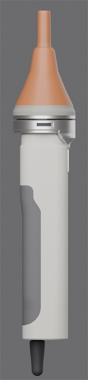
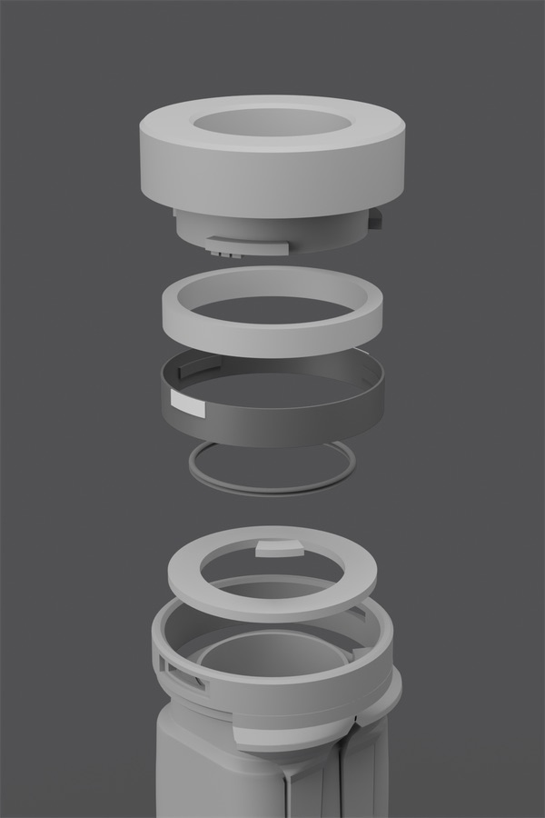
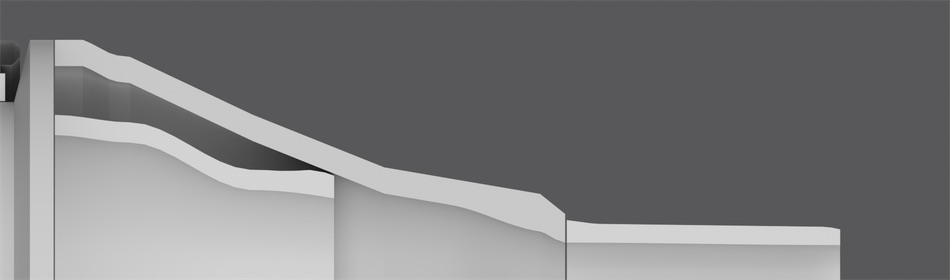
1Thermal break · void between the 2.6 mm shell and the 2.0 mm duct wallDesigned · geometric only
2Min shell-to-duct clearance +0.251 mm analytic · duct ends at Z 118.90Designed · geometric only
3S2 shoulder · Z 91.0–98.5Designed
4Shell → shroud seam 0.200 mm at Z 142.0 · not coincidentDesigned
Z 91.0 98.5 118.9 142.0 169.5 tip Z, mm · ruler registered at 4 model stations, ±2 px at 20.02 px/mm · ticks every 5 mm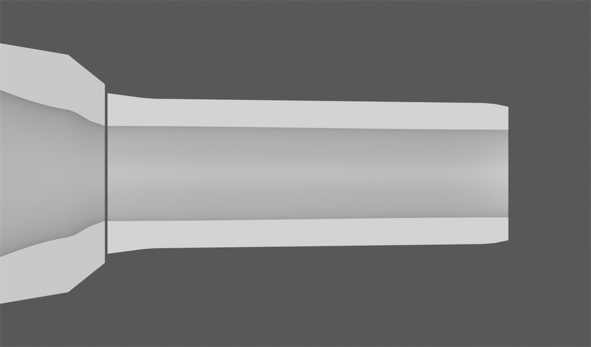
1Seam 0.200 mm · shell → shroudDesigned
2Outlet opening 26.0 × 6.0 · face 29.40 × 9.10 r3.40Designed
3Min shroud wall 1.55 mm · ≥ 1.50 floorDesigned
Concept. No physical prototype. Flow, temperature, power, noise and safety are not established.
05 · Pigment & material
Thirteen role-based materials on 21 objects. Authored values come from the CMF build; rendered readings are sampled from the delivered images. Rejected directions stay struck, not deleted.
Mineral orange
#A6633B
Authored sRGB 0.650/0.390/0.230 · roughness 0.42 · attachment shell
Warm grey
#C7C2BA
Authored · handle body
Graphite
#575659
Authored · grip
Signal amber
#E6852E
Authored · signal arcs · emission #FF9E38
Satin aluminium
#D1D0CE
Authored · roughness 0.38 structural / 0.355 interface
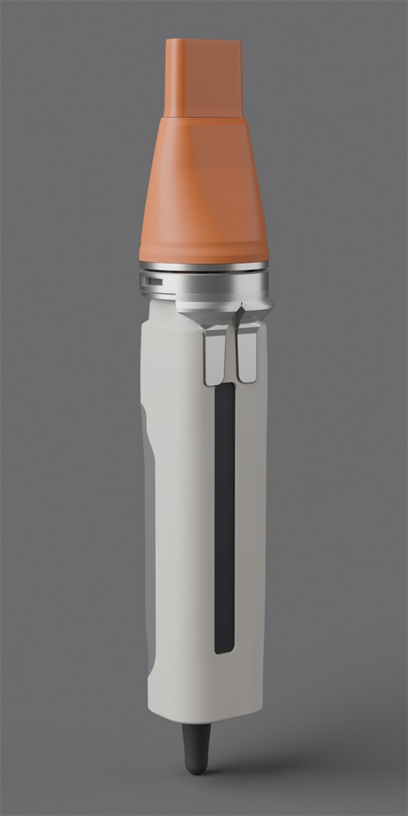
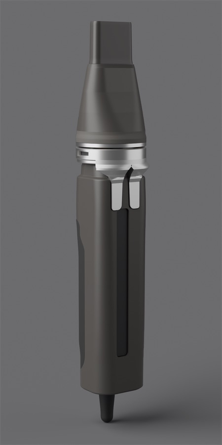
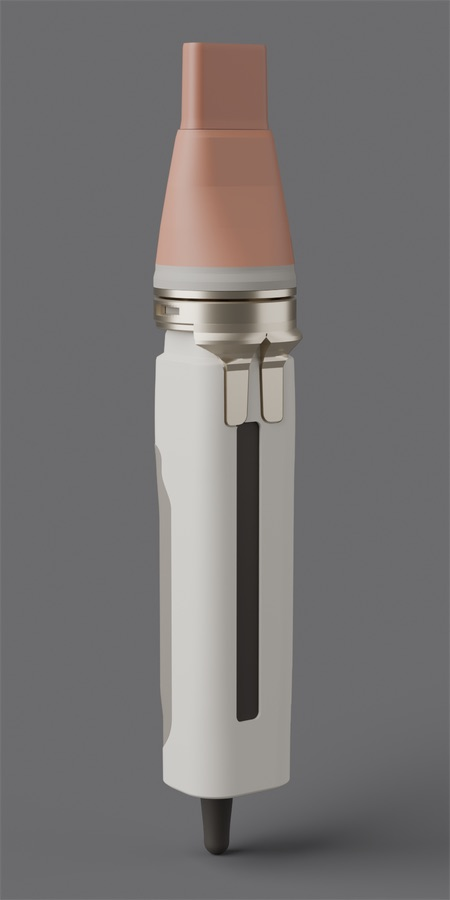
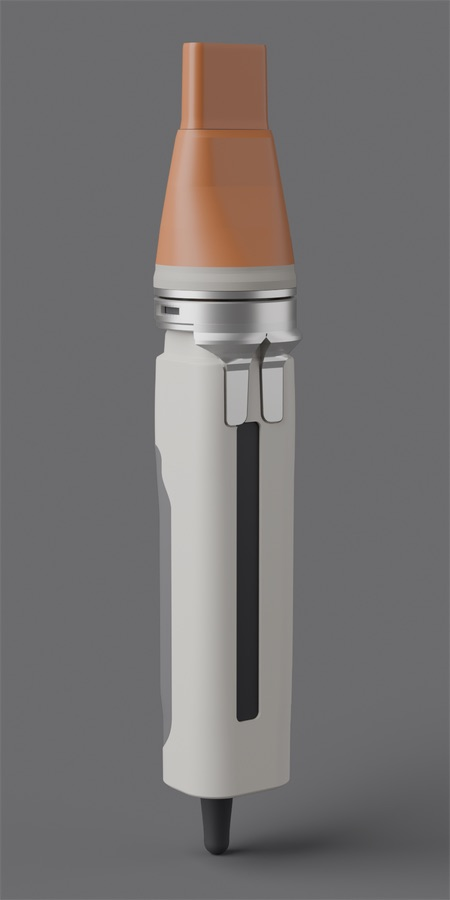
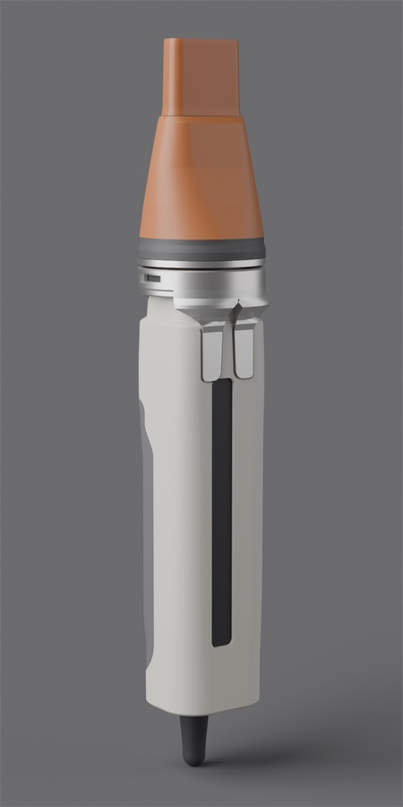
LOCKED · A2_REFINED · BASE LAND L* 63.20 → 59.09
Base land · CIE L*
63.20 → 59.09 · −6.50 % · roughness 0.520 → 0.460
Explored · rejected · kept hidden in the file, not deleted
One pigment, four lights
The authored number never changes. Light and AgX tone mapping do. Each reading is a 7 × 7 median on the delivered image at the stated point.
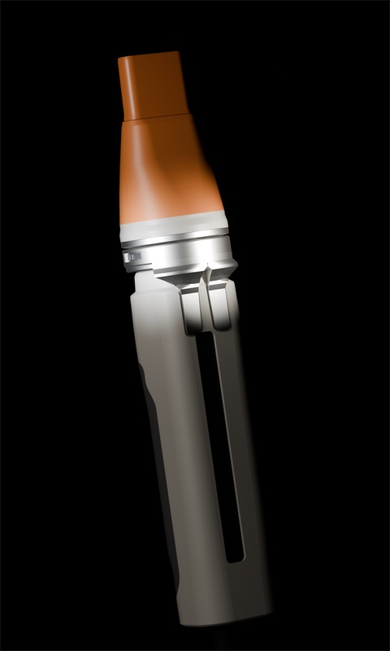
More of the 13 roles · authored
No pure black (darkest 0.056) and no pure white (lightest 0.862). Aluminium is satin anodised "per the ISO 7599 production direction" — a finish direction, not a compliance claim.
06 · Decisions
Cameras, lights, framing, material and aim are frozen across variants, so the renders overlay pixel for pixel — only the decision moves.
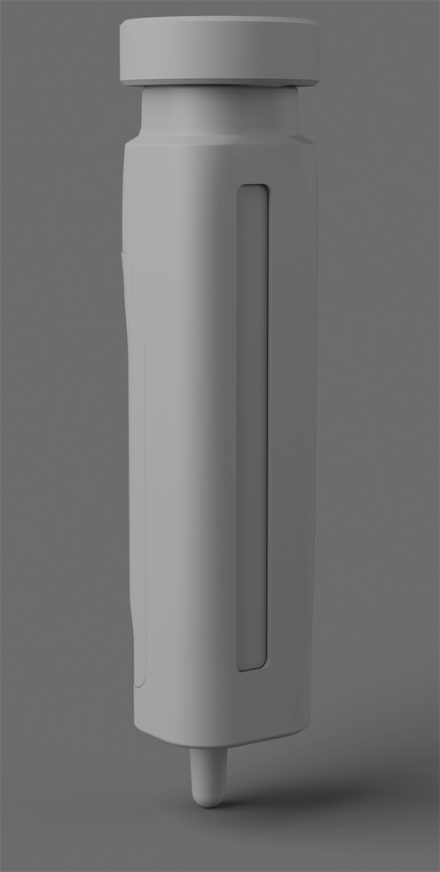
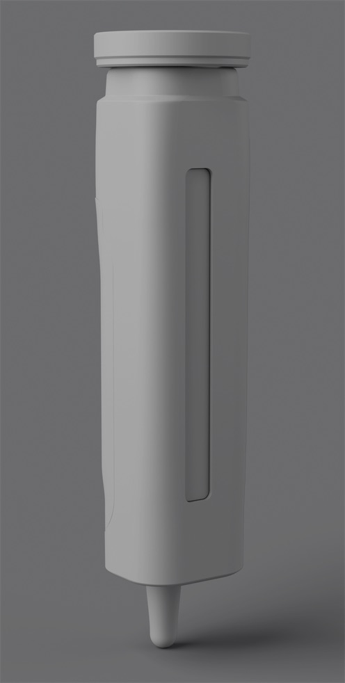
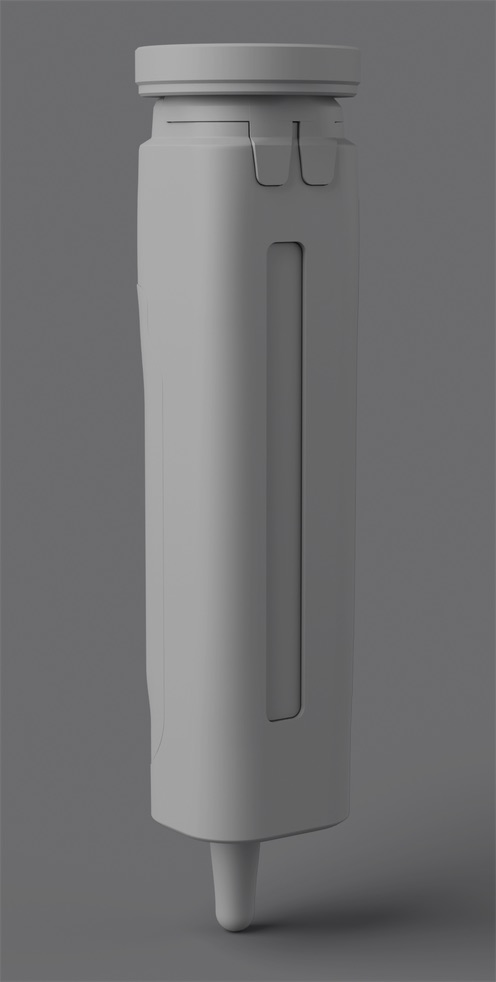
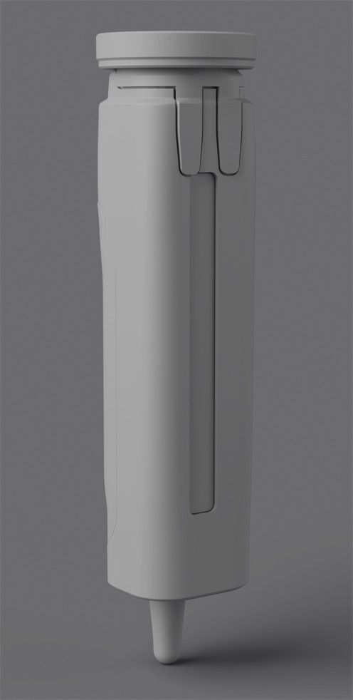
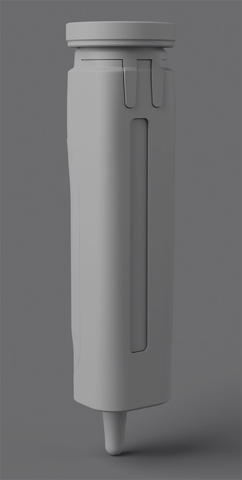
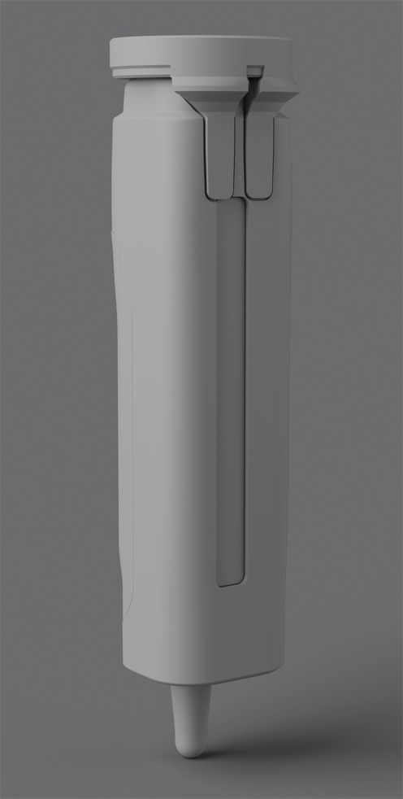
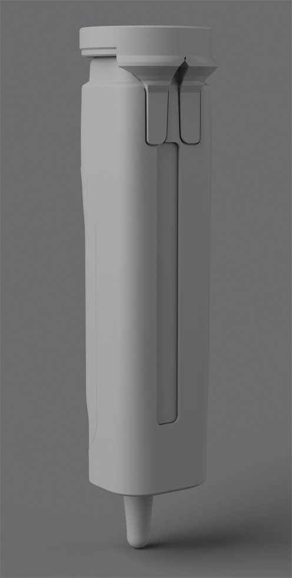
B2.2 FORK · 30 MM · 8.4 MM LEG · 17.6 MM RUN (−12 %) · CROTCH 4.4 → 7.0 · GAP 0.70 · SELECTED
| Step | Penetration | Legs | Central field | Shadow gap |
|---|---|---|---|---|
| v01 | Base · collar depth 15.0 · transition 13.5 · spine 114.5 | |||
| v02 | Base · collar depth 10.0 · transition 10.0 · spine 100.0 · strain relief Ø11.5 × 27 | |||
| B1 short | 18 mm | 2 × 9.5 mm | 2.0 mm | 0.25 mm |
| B2 long | 30 mm | 2 × 8.0 mm | 6.0 mm | 0.70 mm |
| B3 split | 25 mm | 2 × 6.0 mm | 8.0 mm, open | 0.35 mm |
| B2.1 hybrid | 30 mm | 2 × 8.2 mm | 4.0 mm | 0.70 mm |
| B2.2 fork | 30 mm | 8.4 mm working | crotch 4.4 → 7.0 mm | 0.70 mm |
A bridge is a structural member emerging from under the collar and running rearward on the upper-front face, 0.6 mm proud in a 1.0 mm recess. B2.2 closes the inner edges into one joined root under the collar (a Y-crotch) and never exceeds the collar's Ø47. The body was re-verified at 40.000 × 36.000 × 155.000 under every variant.
Only the transition length varies; outlet region 30.0, thermal 26.0, slot 26.0 × 6.0 in all three. Same camera.
Every profile row from Z 98.5 forward is carried over untouched; only the base land and first shoulder vary. Base close-ups, same camera.
Set-aside options are struck through, not deleted: C1, C3, S1 and S3 remain buildable in the study files as the record of why.
07 · Claim ledger
| Claim | Value | Level | Qualifier / source |
|---|---|---|---|
| Handle body envelope | 40.000 × 36.000 × 155.000 mm · collar OD 47.000 | Designed | CAD model dimension, self-verified by the build on every run |
| Bounding box with bridge | 47 × 47 × 192 mm | Designed | Verified unchanged under the B2.1 and B2.2 bridges |
| Exterior B2.2 fork | 30 mm penetration · 8.4 mm leg · 0.70 mm shadow gap | Designed | Approved by the owner as the exterior |
| Bayonet interface | 3 lugs at 120° · 30° lock · 2.30 mm engagement · 0.50 mm draw-down · 0.35 mm detent | Specified intent | Modelled and self-checked; never built or tested · frozen 20 Sep 2026 |
| Seal | Ø30.4 · 1.52 → 1.27 mm (16 % squeeze) | Specified intent | State C scales the seal 0.836 in Z about its own seat |
| Lock states A / B / C | +15 mm, 0° · 0 mm, 0° · −0.4 mm, +30° | Designed | Transforms only; no geometry changes between states |
| Concentrator C2 | 82.0 mm · Ø28 → 26.0 × 6.0 slot · envelope 32.0 × 11.0 | Designed | Locked 20 Sep 2026 · head at 33 % of length |
| Shell-to-duct clearance | +0.251 mm analytic · +0.2542 mm ray-cast | Designed | Geometric clearance only — no thermal performance |
| Shroud wall | min 1.55 mm (≥ 1.50 floor) | Designed | Build check |
| CMF locked | A2_REFINED · 21 objects · 13 role materials · base L* 63.20 → 59.09 | Designed | Locked 21 Sep 2026 |
| Aluminium finish | Satin anodised, "per the ISO 7599 production direction" | Specified intent | A finish direction — not a compliance claim |
| Geometry integrity across CMF | 0.0 mm max vertex deviation · 21 parts | Designed · CAD self-check | Digital model integrity only, not product performance · art-set re-check 255 objects, 65 materials, 0 discrepancies |
| Art-render set | 6 square renders + transparent hero · 2500 px · Cycles 1024 samples · AgX | Designed | Finished renders of the locked model |
08 · Provenance, credits, revisions
| Rev | Date | Change |
|---|---|---|
| A | 18 Sep 2026 | Base v01 · parametric proportion study |
| B | 19 Sep 2026 | v02 proportions + bridge variants B1 → B2.2 |
| C | 20 Sep 2026 | Interface frozen · C2 82 mm locked |
| D | 21 Sep 2026 | S2 shoulder frozen · CMF locked A2_REFINED · art set |
09 · Next specimen
MONOLITH RF03-U1
You already own the bottle. You buy it again anyway.
Open sheet 04